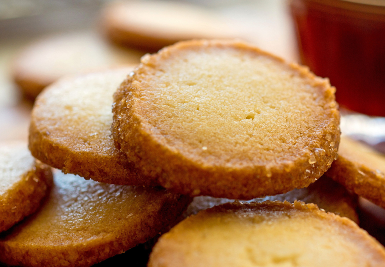

The best butter cookies
These cookies are crisp, crumbly, and incredibly rich. Their perfect texture and balanced sweetness make them irresistible any time of day!
Read recipeIngredients
Yield: 5 dozen small cookies
- 250 grams all-purpose flour (2 cups)
- 3 grams baking powder (½ teaspoon)
- ¼ teaspoon fine sea salt
- 2 sticks salted, cultured butter, at room temperature (1 cup)
- 130 grams granulated sugar (⅔ cup)
- 1 large egg yolk
- 55 grams demerara sugar, for rolling (¼ cup)
Preparation
Total Time: 50 minutes, plus at least one hour’s chilling
- In a large bowl, sift together flour, baking powder and salt.
- In an electric mixer fitted with the paddle attachment, beat together butter and granulated sugar until lightened in color and fluffy; beat in egg yolk until combined. With mixer running on low, add flour mixture until incorporated.
- Divide dough into two balls. On a clean surface, roll each ball into a 1½-inch log. Sprinkle the demerara sugar over a sheet of parchment. Roll each log in the sugar until the outside of the dough is thoroughly covered. Cover logs tightly with plastic wrap and refrigerate at least one hour, or overnight.
- When you are ready to bake the cookies, heat oven to 325 degrees. Line two baking sheets with parchment. Use large, sharp knife to cut each log into ¼-inch-thick rounds. Place cookies 1 inch apart on prepared baking sheets. Bake until cookie edges and bottoms are dark golden brown, about 18 minutes. Cool 5 minutes on baking sheets, then transfer to a wire rack to cool completely. Store in a tightly covered container at room temperature.